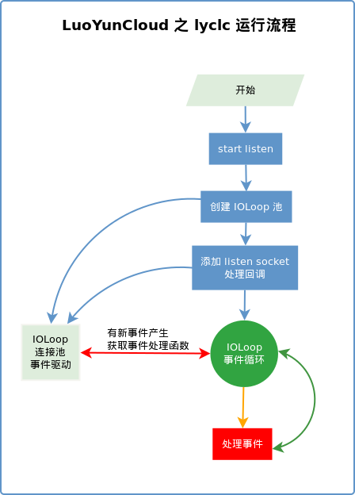

LYC Design 1.0 documentation
上一页
|
下一页
|
索引
LYCLC - 云控制节点
¶
LYCLC 是 LYC 的控制节点，处于监听状态，管理与控制自己域内的计算节点。

內容目录
LYC 架构设计
LYC 自定义通信机制
LYCLC - 云控制节点
Indices and tables
GNU/Linux 系统状态检查
搜索
输入相关的模块，术语，类或者函数名称进行搜索